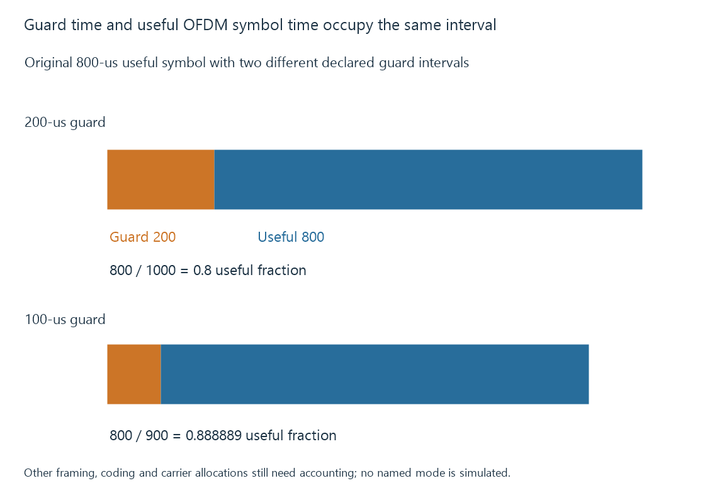

DVB-T terrestrial television
DVB-T specifies terrestrial television transmission using an OFDM-based carrier arrangement, framing and error protection before programme services are selected from recovered data.
DVB-T is a terrestrial digital television transmission system. Its standard defines how broadcast data is framed, coded and modulated for reception, rather than naming one video codec.
The receiver recovers that data before selecting and decoding a programme service.
Many subcarriers carry one transmission arrangement
DVB-T uses OFDM, organizing data across many subcarriers. Their frequency/time relationship lets the receiver distinguish the intended symbols within the configured transmission.
Delayed copies from radio propagation affect reception. The transmitted symbol arrangement includes a guard interval intended to help accommodate relevant delay relationships.

The receiver still needs suitable synchronization and a sufficiently recoverable signal. A guard interval is not a guarantee against every reflection, interference source or receiver limitation.
Guard time occupies part of the symbol interval
Use an original timing model with 800 μs of useful symbol interval and 200 μs of guard:
Total interval = 800 + 200 = 1000 μs
Useful-time fraction = 800 / 1000 = 0.8
Guard-time fraction = 200 / 1000 = 0.2
If the guard were instead 100 μs with the same useful interval, the useful-time fraction would be 800/900 = 0.888889.
These values illustrate a timing tradeoff, not a complete DVB-T bitrate calculation. Carrier allocation, modulation, coding, pilots and other structure also affect useful data.
The larger declared guard has a larger timing allowance for delayed copies but a smaller useful-time fraction. Actual receiver/channel behavior determines whether the protection is adequate.
The recovered programme has other properties
After reception, the route identifies the intended service and its component PIDs through transport/signaling relationships.
MPEG-TS programme tables explains that selection. The resulting video/audio codecs determine the later decoding request.
An Emby tuner/backend can recover a DVB-T transport while a selected client still needs preparation for a particular service format. RF support and media-decoder support should therefore remain separate results.
DVB-T2 is another transmission system
DVB-T2 changes the physical/framing/coding arrangement and introduces its own configuration/profile relationships.
A DVB-T-only frontend does not gain that demodulation merely because the server can decode a newer video codec.
See Also
- DVB-T2 terrestrial television
- Over-the-air television
- TV signal quality and decoding margin
- Broadcast multiplexes